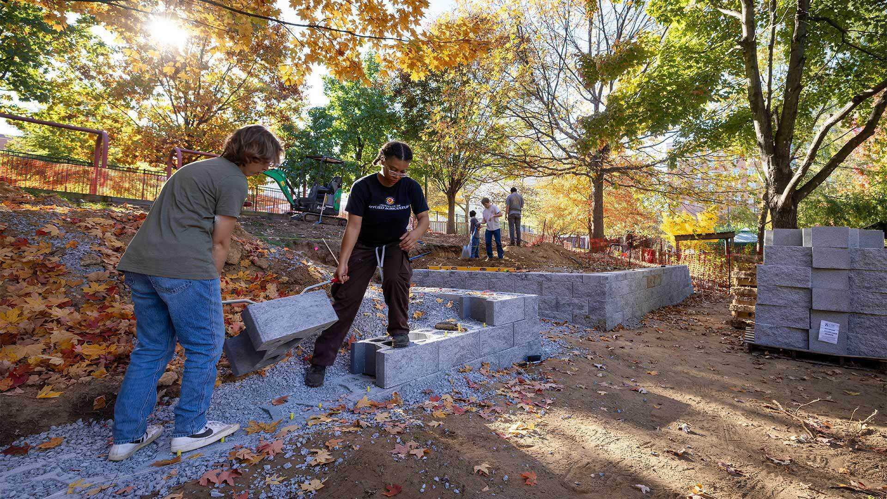
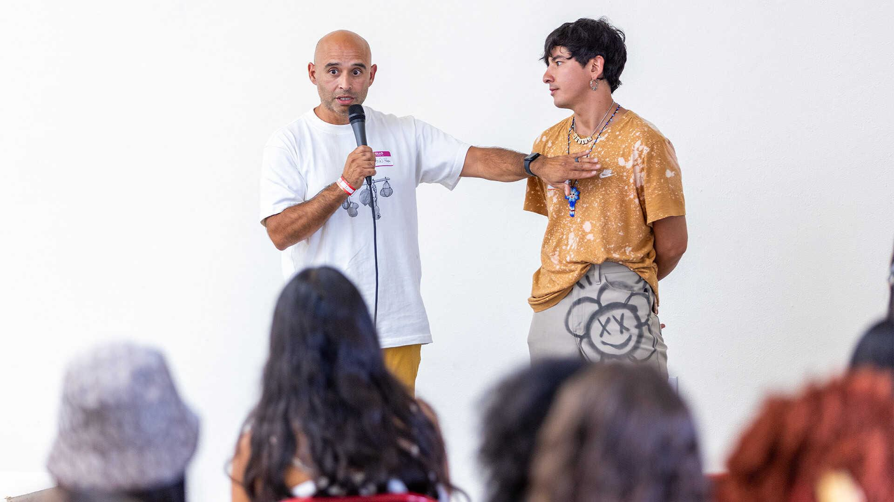
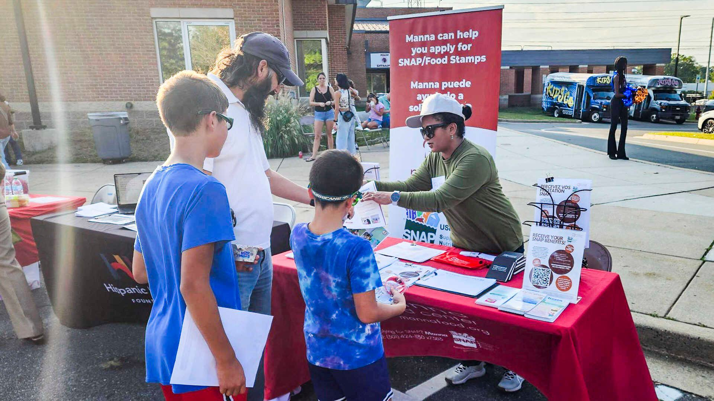
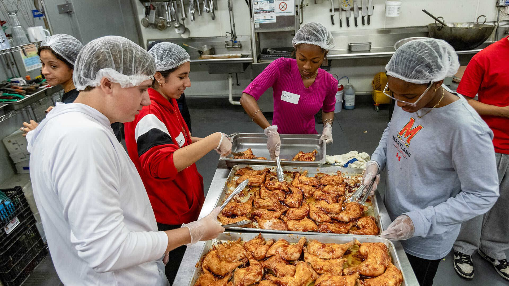
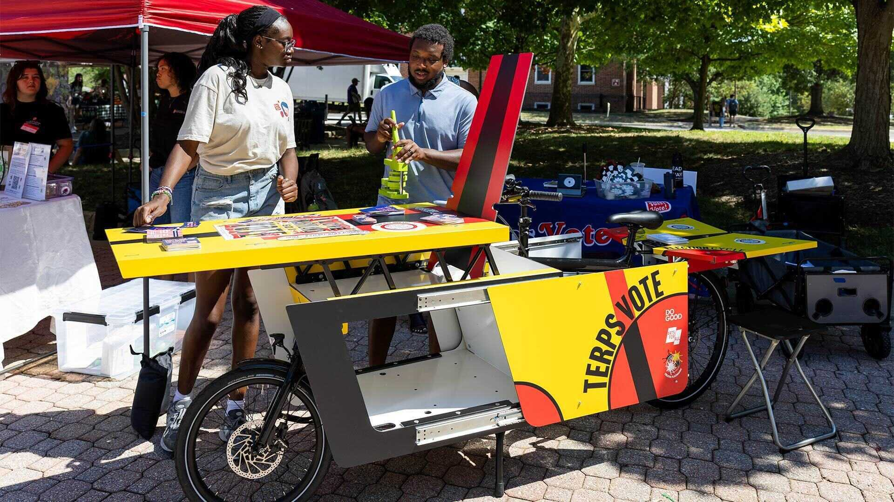
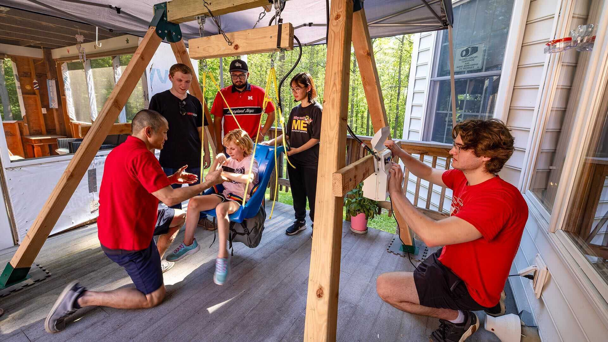
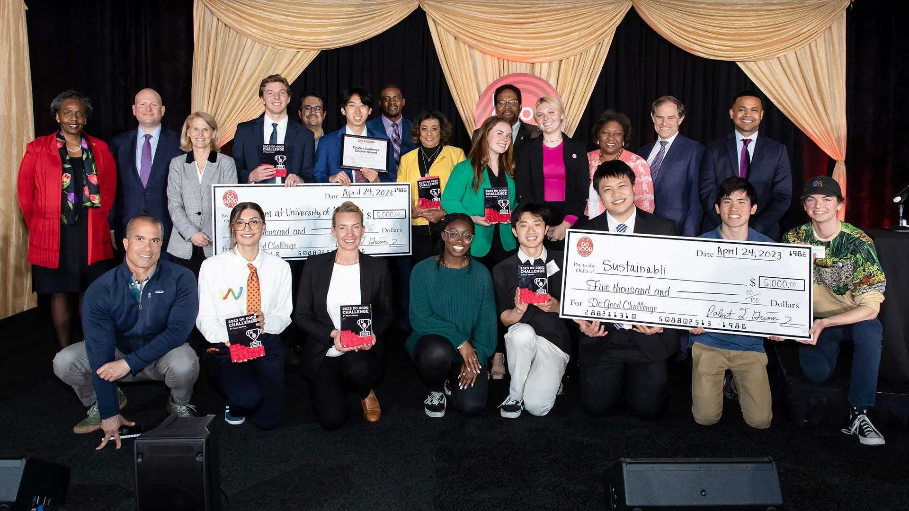
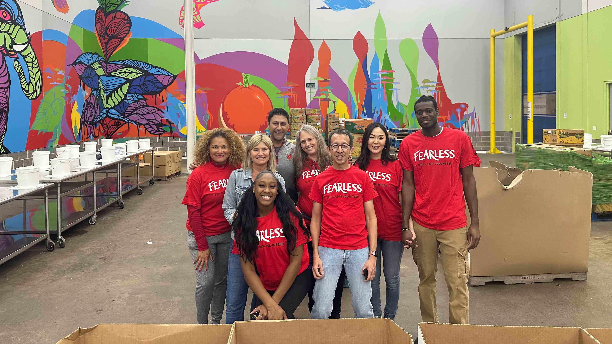

Building a Do Good Campus
As the nation's first Do Good Campus, the University of Maryland is redefining what it means to educate for impact and innovation, serving as a national model for how higher education can serve the public good.

APRIL IS DO GOOD MONTH
In April, Terps come together to accelerate impact in our communities.
Do Good, Now

Laptops and Textbooks: Out. Skid Loaders and Granite Blocks: In.
AGNR class transforms Center for Young Children’s eroded hill into usable grassy terrace.

Taking Back Indigenous Design, One Outfit at a Time
Smith School professor helps Native youth turn creative ideas into business ventures.

Business Fraternities to Feed Solutions to Food Pantry’s Data Challenges
A Smith School competition encourages undergrads to recommend strategy for a Montgomery County nonprofit.

Hundreds of Volunteers Plant Trees, Pick Up Litter and Pack Up Donations on Good Neighbor Day
The 15th annual day of service brought together Terps and community members.

'Spoking' the Youth Vote
Volunteers debut the ElectionCycle and DemocraCycle bikes to share election information.
How Terps Spent the Summer Doing Good in 2026
Improving literacy, teaching oral hygiene, hosting a free football camp and more.

Therapy Swing Opens a New World of Play for Harford County Girl
UMD student team creates, installs motorized device for child with special needs
Growing Vegetables—and Curiosity
At University Park Elementary School, kids learn about plant science, pollinators and more at new garden with help from UMD
Public research universities are uniquely positioned to make a positive difference in the lives of our citizens and across the globe, because universities have a combination of values, assets and problem-solving approaches that simply doesn’t exist elsewhere.
Darryll J. Pines
President, University of Maryland
Do Good Month

Featured Event
Do Good Challenge
Samuel Riggs IV Alumni Center
Students from across campus spend the year advocating, fundraising, volunteering and developing solutions for pressing social issues. The challenge culminates in a finals event where six teams pitch their project or venture and the impact they’ve made for the chance to win a cash prize.
Do Good Month highlights · April 2026
Do Good Service Challenge
Do Good in your communities this month. We challenge you to take action and join Terps, everywhere, in one or more ways to give back.
Terps Earth Day Park Clean Up
Celebrate Earth Day! Wear your favorite shade of green and join College Park neighbors for a community clean up.
Maryland Day
Five learning neighborhoods. Hundreds of activities. One unforgettable day of fun and discovery. Bring family and friends to the University of Maryland's annual springtime open house, and learn more about our Do Good campus.

Terps Against Hunger Do Good Month Service Project
Samuel Riggs IV Alumni Center
Roll up your sleeves and help pack nutritious meals for individuals and families facing food insecurity in our community.
We are united in purpose to do good
Another way the University of Maryland is leading Fearlessly Forward.